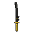
N影の道
Gravity Runner: Dash
GAME DESIGN DOCUMENT · GDD EXPRESS
DOC · v1.0
Kaito, el Caminante de las Sombras
Grupo 35 — Multimedia y Juegos en Web
Actividad: Personaje, Assets y Animaciones (Pixel Art / Piskel)
Pixel Art
GDevelop
Web
Nahuel Marcilli
Jorgelina Elizabeth Mendieta
Taoufik Saidi
Delcy Adalis Villalba Olmedo
GDD publicado online
Versión web de este documento con animaciones activas:
https://team35-mjw.vercel.app/
Nota: este documento queda sujeto a modificaciones tanto en la
historia como en las mecánicas a lo largo del desarrollo del proyecto.
1 · Visión del Juego
Plataformas / Runner
Pixel Art
Dark Fantasy Japonés
Web / PC (GDevelop)
Casual
Sinopsis
En el Japón feudal de las sombras, el templo secreto del clan Shinobi custodia el Pergamino del Equilibrio Gravitatorio, una reliquia ancestral capaz de alterar la atracción terrestre. Una noche, el clan rival Kuroshini asalta el templo, rompe el sello sagrado y roba el pergamino. Las fortalezas flotan, los techos se vuelven suelos y el caos reina.
Kaito, único superviviente del ataque, debe recuperar las hojas del pergamino antes de que el líder enemigo absorba su poder y destruya la realidad.
Género y plataforma
GéneroPlataformas / Runner por niveles
MotorGDevelop
PlataformaWeb / PC (navegador)
PúblicoJugadores casuales
DuraciónTutorial + 3 niveles
Pilares de diseño
- Gravedad como verbo: invertirla es el único poder.
- Ritmo: decidir en fracciones de segundo (risk vs. reward).
- Estética japonesa oscura: silueta ninja, paleta contenida.
- Legibilidad: siluetas claras, hitbox honestos.
Bucle de juego (Core Loop): Correr → Invertir gravedad (Espacio)
→ Esquivar / Recolectar → Alcanzar meta o superar récord.
Documento vivo. El GDD es una guía de trabajo y puede modificarse
durante la producción: la historia, la ambientación y las
mecánicas quedan abiertas a ajustes según decisiones del equipo y
limitaciones del motor. Versión publicada en
team35-mjw.vercel.app.
2 · Ficha del Personaje — Kaito
NombreKaito (カイト) — El Caminante de las Sombras
Edad19 años
RolNinja guardián / Protagonista
ClanShinobi (superviviente)
HabilidadManipulación de gravedad — invierte su propia gravedad usando el sello del pergamino. Consume stamina.
MotivaciónRedimir la caída de su templo y restaurar las leyes naturales.
ArmasKatana (dorso), daga corta (cinto), shuriken hira (bolsa)
Apariencia visual
Traje ninja negro con detalles carmesí, armadura de placas en hombros y torso, protectores metálicos en antebrazos y piernas, capucha ninja con máscara facial. Katana envainada en la espalda con contrapeso dorado.
Stats de juego
Vida3 corazones (reinicio instantáneo)
StaminaSe gasta al invertir gravedad y correr rápido — paralelo a la Magia del Mago
RecargaAutomática lenta + gemas
VelocidadConstante (runner)
Controles
Espacio / ClicInvertir gravedad
← →Ajuste fino (opcional)
EscPausa
3 · Animaciones del Personaje
Sprites en formato 128×128 px, escalables a 32×32 para in-game. Animaciones diseñadas para leerse a distancia con siluetas simples.
IDLE — 8 frames · loop 1.2s
Respiración calma, katana lista al costado. Se reproduce mientras el jugador no ejecuta ninguna acción o durante pantallas de espera.
8 frames128×128Loop
Animaciones CAMINAR y SALTAR — en producción. Se agregarán al documento
una vez generadas.
3.5 · Personaje B — Mago (en exploración)
Segundo personaje en fase de diseño. Rol por definir: se está evaluando si será jugable alterno (elección de clase al iniciar el nivel) o enemigo/mid-boss del clan Kuroshini. La base de comportamiento y ciclos de animación es la misma que la de Kaito: idle, walk, jump/dash y un ataque ejecutable con recurso.
Adaptación cruzada — Kaito vs Mago
| Aspecto | Kaito (Ninja) | Mago (en exploración) |
|---|---|---|
| Recurso | Stamina — se gasta al invertir gravedad y correr rápido | Magia — se gasta al lanzar hechizos |
| Ataque | Katana / dash | Proyectil elemental (ver frames de ataque) |
| Regeneración | Recolectando gemas / con el tiempo | Recolectando cristales / con el tiempo |
| Silueta | Compacta, oscura, ágil | Alta, capa larga, gestos amplios |
| Rol posible | Protagonista fijo | Jugable alterno o mini-boss del clan rival |
Concept · CAMINAR y poses base
Hoja de referencia de idle, walking y posturas de ataque. Se usará como base para extraer los frames finales del spritesheet una vez definido el rol.
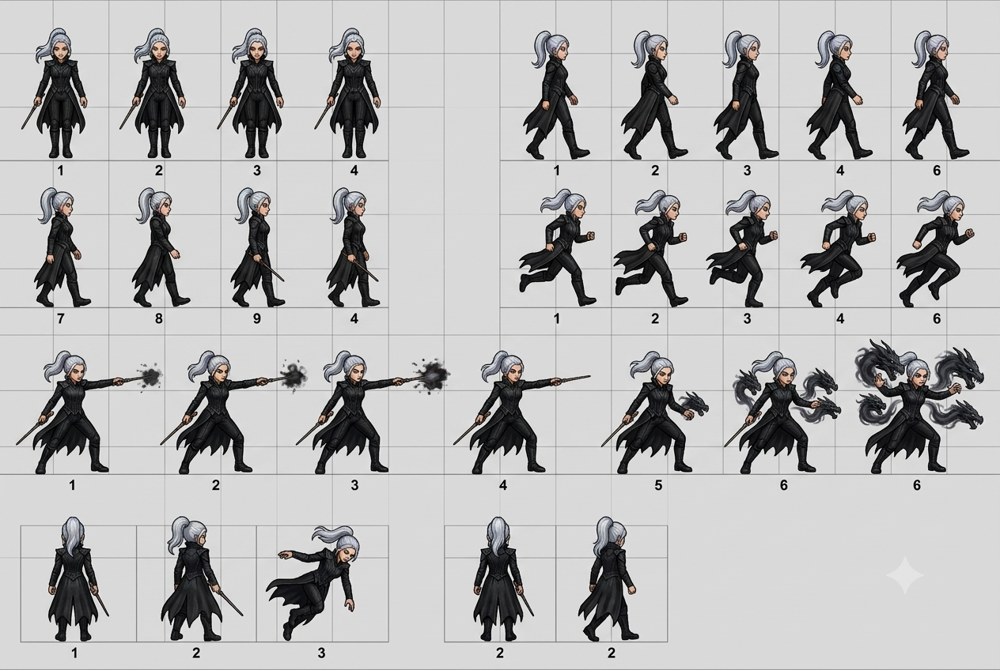
Concept · ATAQUE (efectos mágicos)
Secuencia de casteo con efectos elementales (viento / hielo). Este poder se reemplaza en Kaito por dash de stamina — misma silueta de gesto, sin partículas mágicas, con estelas de velocidad.
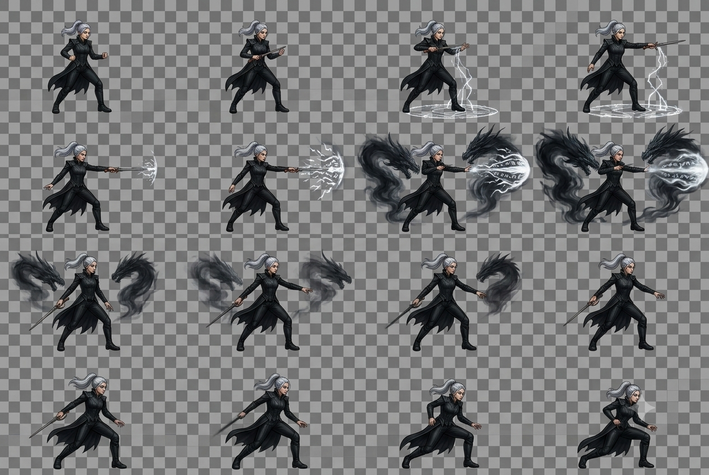
Estado del personaje B: concept aprobado, rol y balance en discusión.
La decisión enemy/playable definirá si obtiene stats de progresión o pool de
hechizos con enfriamiento.
4 · Assets del Proyecto
Katana japonesa — 8 rotaciones
Arma característica del clan Shinobi. Sprite rotado en las 8 direcciones cardinales, listo para orientar en cualquier ángulo de disparo/ataque.
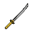
NE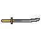
E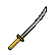
SE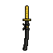
S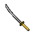
SW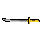
W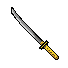
NWShuriken (Hira-shuriken) — asset extra
Estrella clásica de 4 puntas. Cumple con la consigna: "diseñar otro asset que sea parte del proyecto". Usado por el enemigo Lanzador de Shurikens y como proyectil coleccionable de puntaje.
.png)
Formato 32×32 Pixel Art
Usos in-game
- Proyectil enemigo (patrón rítmico de 2s).
- Coleccionable de puntaje (+50 pts).
- Icono en HUD para conteo de vidas/munición.
5 · Paleta de Colores
Paleta contenida, dark fantasy japonés. Aplicada de forma consistente en fondos, sombras, detalles metálicos y focos narrativos.
Regla de aplicación
- Máximo 5 tonos por escena.
- Dorado reservado para elementos interactivos y coleccionables.
- Carmesí solo para peligro o decisión narrativa importante.
- Jade solo cuando aparece el sello del pergamino (evento único).
6 · Camino del Héroe (12 Etapas)
La narrativa sigue el Monomito de Campbell, mapeado a la progresión Tutorial + 3 niveles.
01Mundo Ordinario — entrenamiento en el templo.
02Llamado — el templo es atacado y el pergamino robado.
03Rechazo — Kaito duda, herido.
04Mentor — el gran maestro le entrega el fragmento central.
05Umbral — cruza el Portal del Equilibrio.
06Tutorial: Patio Distorsionado (Espacio para gravedad).
07Nivel 1: Templo Caótico — gravedad básica.
08Nivel 2: Cueva de Cristal — velocidad y sincronización.
09Nivel 3: Fortaleza de las Sombras — prueba suprema.
10Regreso — huida a máxima velocidad.
11Resurrección — salto de gravedad definitivo.
12Elixir — restaura la gravedad, se vuelve Gran Maestro.
Decisión narrativa final
[ ¿Qué hacer con el Pergamino? ]
|
+----------+----------+
| |
[ A: Restaurar ] [ B: Absorber ]
| |
Final Bueno Final Oscuro
Gran Maestro Guardián Supremo
7 · Mecánicas, Enemigos y Decisiones
Condiciones
VictoriaAlcanzar la bandera del nivel o eliminar a todos los enemigos.
DerrotaColisión con pincho o caída al abismo → reinicio instantáneo.
Recurso: Energía Gravitatoria
Barra que se consume al invertir gravedad. Se recarga sola lentamente o al recoger gemas. Introduce decisión de ritmo: ¿gasto ahora o guardo para el abismo?
Enemigos
| Tipo | Comportamiento | Interacción |
|---|---|---|
| Ninja Patrullero | Patrulla izquierda-derecha en plataforma (extensión GDevelop Platformer Enemy Patrolling). | Contacto lateral/inferior = pierde vida. |
| Archimandrita de las Sombras | Estático en techo o suelo, lanza shuriken/esfera cada 2 s. | Proyectil impacta = daño. |
| Muro de Caos (Nivel 3) | Pared oscura que avanza desde la izquierda constantemente. | Alcance = game over. Obliga a no detenerse. |
Decisiones en tiempo real (Risk vs. Reward)
| Ruta | Riesgo | Recompensa |
|---|---|---|
| Ruta Alta (techo) | Menos obstáculos. | Sin coleccionables. |
| Ruta Baja (suelo) | Pinchos, patrullas. | Reliquias y Cristales de Poder (+ final alternativo). |
8 · Arte, Efectos y Audio
Estilo visual
- Pixel Art minimalista, escala 32×32 en juego.
- Dark fantasy japonesa. Fondos pintados semi-realistas detrás.
- UI elegante: negro, azul noche, dorado, crema.
- Silueta primero — legibilidad a distancia.
Efectos (FX)
- Niebla ambiente
- Partículas de polvo
- Chispas mágicas al invertir gravedad
- Brillo tenue en coleccionables
- Transición fundido entre niveles
- Destello sobre decisiones importantes
Plan de sonido
| Evento | Tipo | Origen |
|---|---|---|
| Cambio de gravedad | Woosh / impulso corto | GDevelop SFX (sfxr) |
| Recoger gema | Chime agudo | GDevelop SFX (sfxr) |
| Muerte / choque | Golpe seco | GDevelop SFX (sfxr) |
| Victoria | Fanfarria positiva | GDevelop SFX (sfxr) |
| Música de fondo | Loop chiptune 8-bit | itch.io (free 8bit music) |
| Ambiente | Viento, ecos, pasos suaves | Freesound / itch.io |
Herramientas utilizadas: Piskel (pixel art), Aseprite (frames),
GDevelop (engine), Krita/Photopea (retoque). Assets originales del equipo + shuriken de dominio público.
9 · Galería de Arte Conceptual
Selección de arte conceptual, mockups de nivel y bocetos de personaje generados durante el brainstorming del proyecto. Estas piezas orientan la dirección visual y la atmósfera dark fantasy japonesa que persigue el juego.
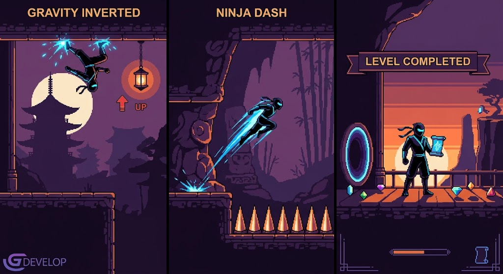
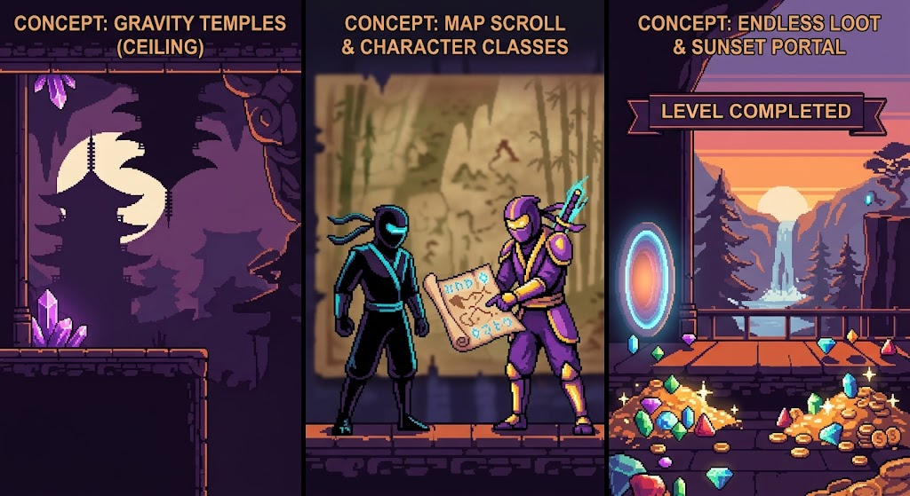
Concepts · Antagonistas femeninas
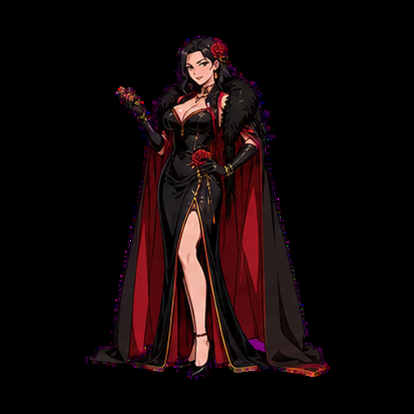
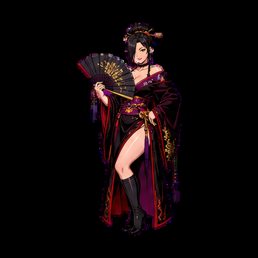
.
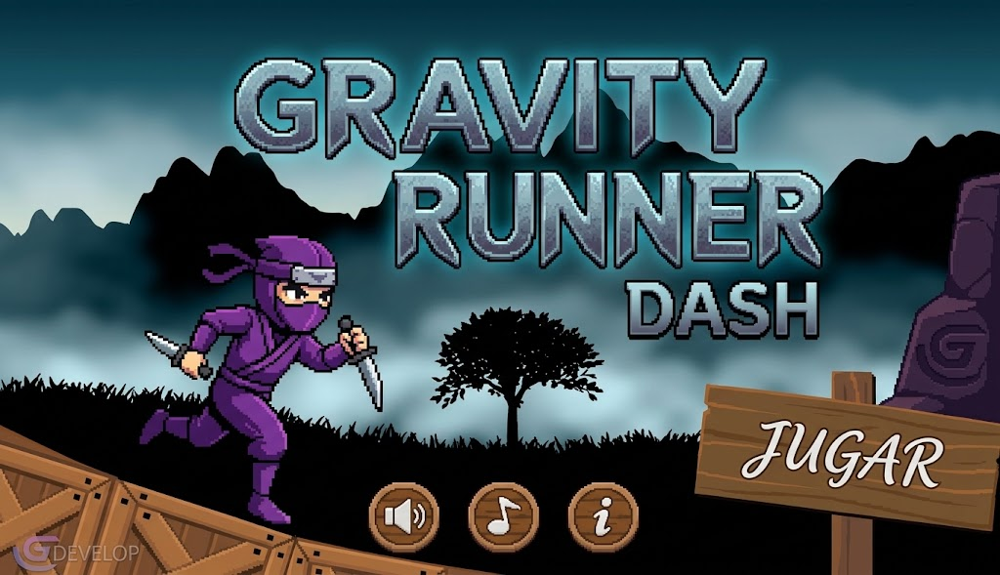
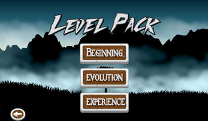
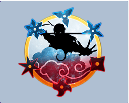
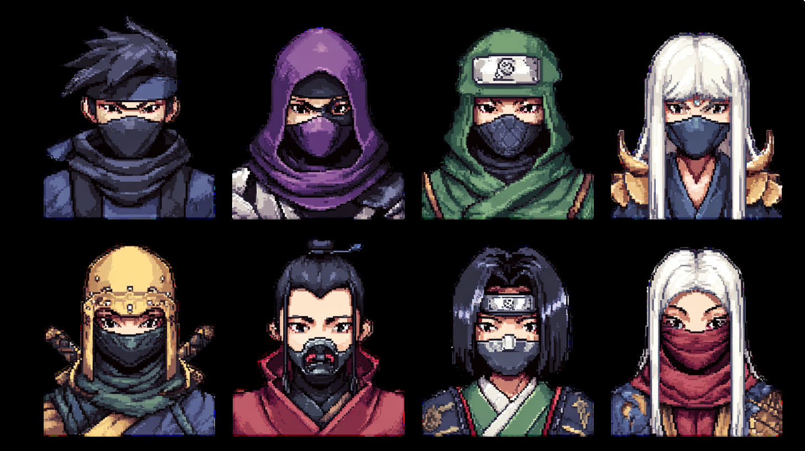
.
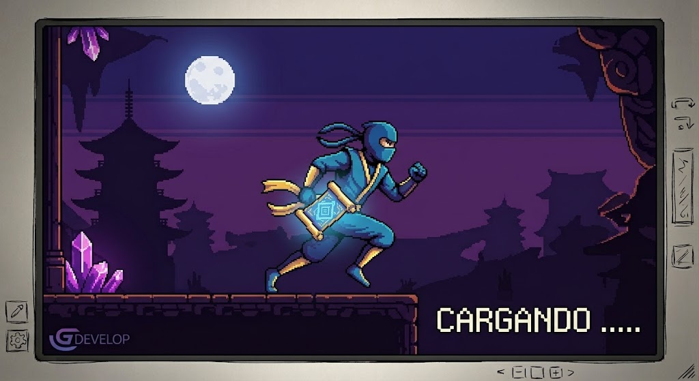
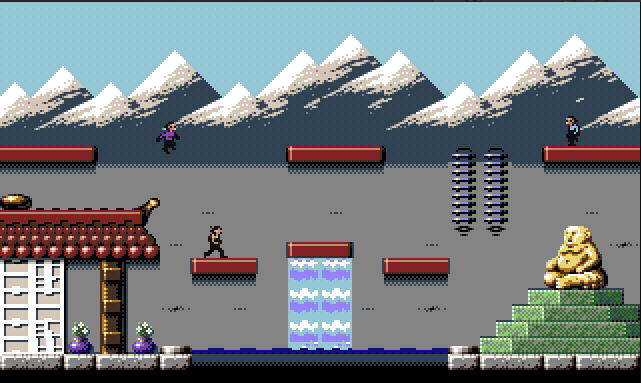
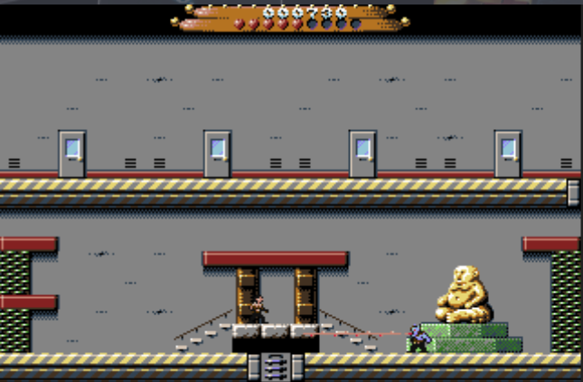
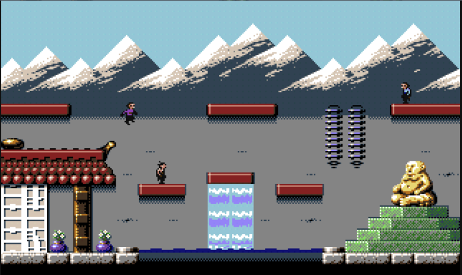
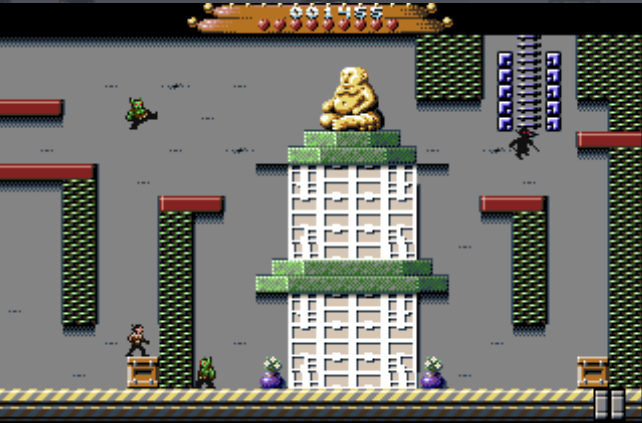
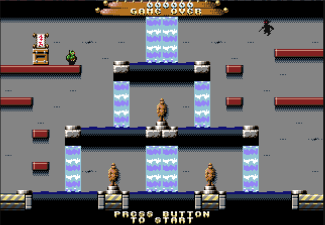
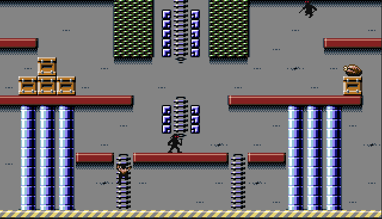
Créditos del equipo — Grupo 35
Nahuel Marcilli — Diseño, sprites, GDD
Jorgelina Elizabeth Mendieta — Arte, paleta
Taoufik Saidi — Narrativa, mecánicas
Delcy Adalis Villalba Olmedo — Audio, testing
Materia: Multimedia y Juegos en Web · Grupo: 35 · Motor: GDevelop
終
Fin del documento